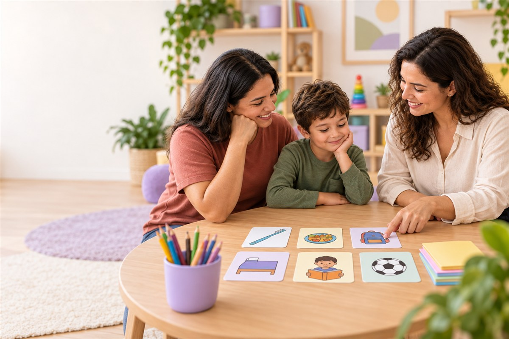

ORIENTAÇÃO PARENTALApoio que
Apoio que
conversa com
a vida real.
Trocas sobre desafios, possibilidades e experiências da rotina familiar.

Escutar
Compartilhar
Construir juntos
INFÂNCIAS MAIS POSSÍVEIS
Trocas sobre desafios, possibilidades e experiências da rotina familiar.

INFÂNCIAS MAIS POSSÍVEIS